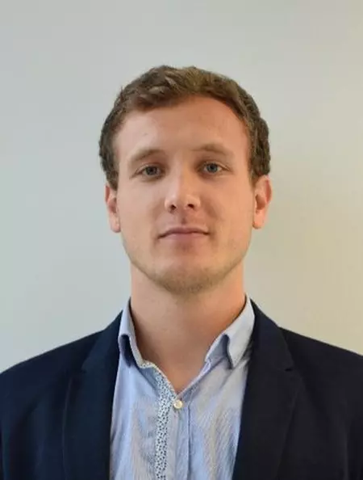

Guillaume, jeune ingénieur spécialisé en rythmologie, travaille dans une entreprise qui produit et installe des pacemakers et défibrilateurs.
 Guillaume Gaborel- Depuis combien de temps pratiquez vous ce métier ?
- Appréciez vous ce que vous faites ? Pourquoi ?
- Vous avez choisi un domaine plutôt nouveau et qui ne cesse d'évoluer, avez vous constater des évolutions depuis vos débuts, et si oui, en quoi ont ils changé vos pratiques et vision des choses ?
- Pensez vous que ces évolutions ont été bénéfiques ?
- Comment pensez-vous que ce domaine va continuer à évoluer dans le futur à petite et à grande échelle ?
- Quel est le poids de la technologie dans le travail, en êtes vous dépendant ?
- Votre travail diffère-t-il de son aspect vu par le grand public ?
- Je suis entré dans le secteur médical directement après la fin de mes études en 2017. J’ai d’abord eu une expérience d’ingénieur d’application spécialisé en rythmologie (Gestion du rythme cardiaque) sur 4 années. Depuis 2021 j’occupe le poste d’ingénieur technico-commercial dans ce même domaine au sein de la société Medtronic.
- Ce métier est tout simplement passionnant. Je suis spécialisé dans les pacemakers et défibrillateurs implantables. Mon métier se divise en plusieurs volets. Le premier, l’accompagnement au bloc opératoire aux côtés des rythmologues afin de les conseiller lors de l’implantation. Deuxièmement nous sommes présents lors des consultations pour assister les rythmologues lors de la programmation des prothèses. Finalement nous avons un rôle quotidien de formation de tout le personnel hospitalier sur nos produits. Ce métier est vraiment l’interface entre la technique et la clinique. Le fait de travailler presque en binôme aux côtés des cardiologues dans le but d’avoir une prise en charge optimale des patients est vraiment motivant et gratifiant.
- Beaucoup d’innovations ne cessent de naître dans ce milieu concurrentiel. Le plus marquant, à mon sens, est l’évolution de la télémédecine. De plus en plus de patients sont suivis à distance grâce à leurs prothèses connectées. Cette surveillance quasi quotidienne est un réel progrès dans la prise en charge des patients et améliore en tout point leur expérience.
Toutes les évolutions ne sont pas bénéfiques mais « l’avantage » du secteur médical est que chaque innovation, chaque nouvelle pratique est suivi de près par des études à court et long terme, par un système de materiovigilance qui ne laisse aucune place aux défauts et aux malfaçons.
La miniaturisation des dispositifs médicaux, les thérapies cellulaires avec la greffe de cellules souches, la Bio-impression, la robotisation des procédures. Beaucoup de voies sont envisageables et envisagées et sont très prometteuses.
La technologie est le cœur de mon métier. Grâce à elle, des pathologies mortelles sont devenues bénignes et facilement curables. Cette technologie est de plus en plus présente également pour les praticiens mais aussi pour les patients qui peuvent s’ils le souhaitent être plus impliqués dans le suivi de leur pathologie via diverses applications pouvant communiquer avec leur prothèses.
Je pense que mon métier est peu connu du grand public. Le monde médical a besoin de l’ingénierie afin de continuer à innover et d’assurer une utilisation optimale des dispositifs.
Un grand merci à Guillaume GABOREL pour sa participation à notre projet.